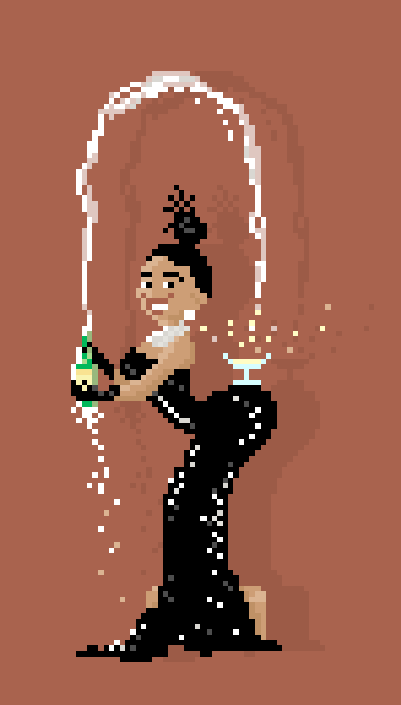

✖
מיכאל הוא מרכיב אקוטי בחבורת הבילויים
.נולד וחי בישראל אך ליבו בטורינו, איטליה
.כבר מגיל צעיר מיכאל חושב מהזין
.מיכאל הכי חתיך בחבורה, וסקסי
(יש לו תחת של אלוקים (יש לו *קים
.הוא אוהב להמציא משלים, גוזל נשרים
.עם האמת הוא משלים ואת העולם מקדים
אף פעם לא נשכח את הסביח של מיכאל,
ואת שאר הירקות
.אוי והסבונים שהוא מכין
.(יש לו ספר זן בשירותים (שתבינו כמה הוא מחכים
מיכאל במילה: מור